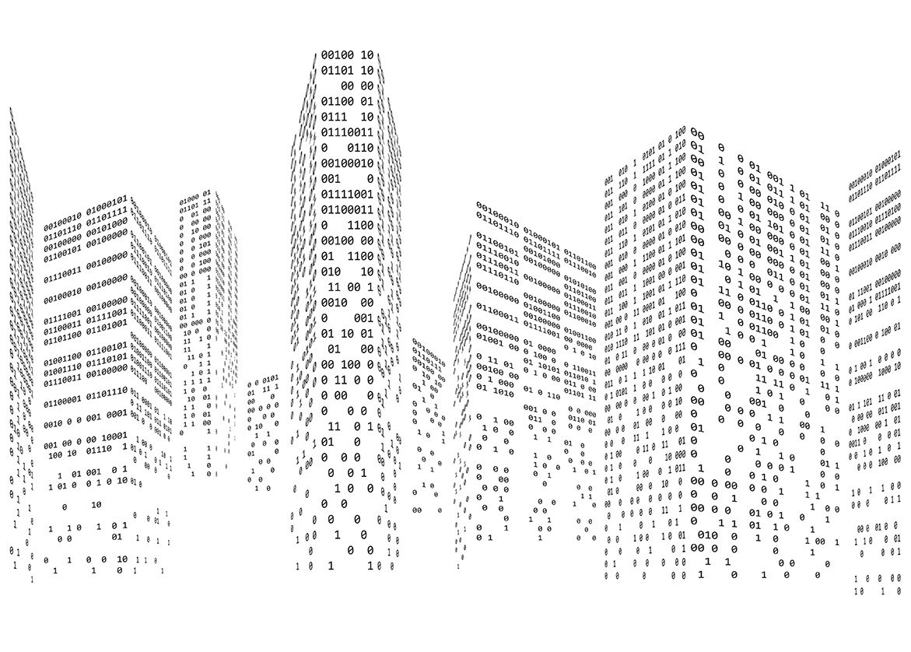

Hjem
1b - Fra 0 til 1 til tekst, lyd og bilde
Hvorfor 0 og 1?
Representasjon av tekst
Representasjon av farge
Representasjon av bilde
Representasjon av lyd
Filer

1B Fra 0 til 1 til tekst, lyd og bilde
Etter dette læringsløpet skal du kunne
forklare hvorfor datamaskiner baserer seg på binære tall (0 og 1)
forklare hvordan tekst kan representeres av binære tall
forklare hvordan bilder kan representeres av binære tall
forklare forskjellen mellom punktgrafikk og vektorgrafikk
forklare hvordan en skjerm kan vise fram tekst og bilde
forklare hvordan lyd kan representeres av binære tall